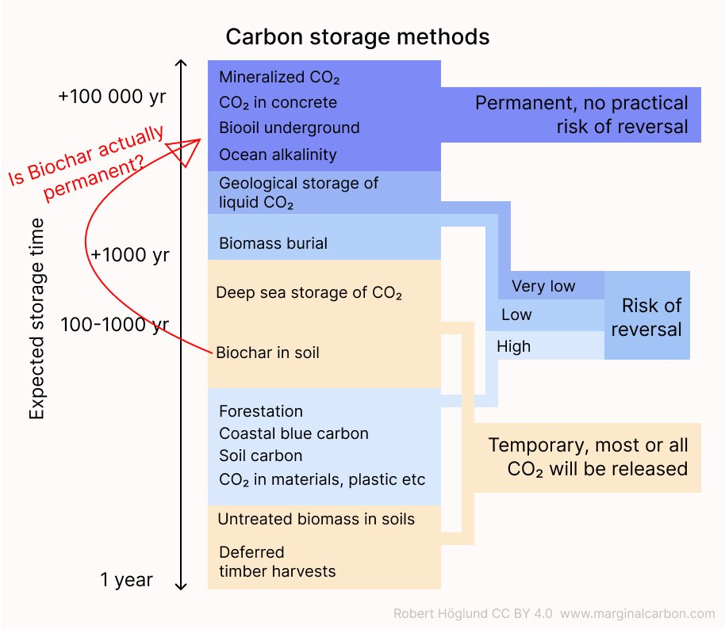
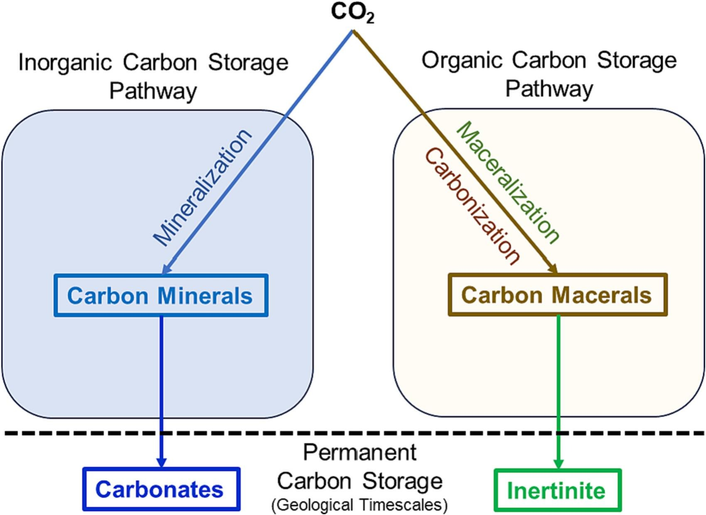
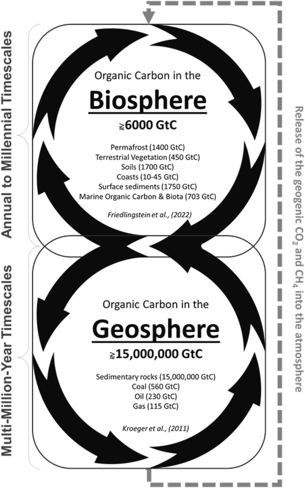
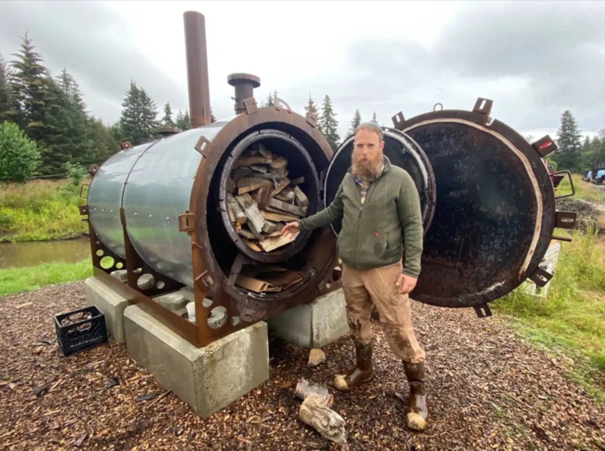

15 Biochar
Höglund
Looks like I may need to redraw this graph. A new peer-reviewed paper points to biochar being permanent carbon storage with just a small part decomposing.
Previous meta-studies have estimated that around 20% of the carbon in biochar is lost after 100 years and half after 500 years. It is challenging to prove empirically since the decay you see in the first years may be just the volatile parts being lost, it does not necessarily say anything about the fate of the bulk of the char. The new paper uses a novel method to test the stability and proposes a new test to determine permanence, “Random reflectance” (Ro). It finds that most biochar is actually “inertinite”, stable for millions of years.
The transformation of biomass to inertinite is one of the two main natural pathways exerted by Earth to permanently store organic carbon, mineralization being the other.
The paradigm shift has started, but I would be curious to hear what other biochar researchers have to say.

Sanei Abstract
The natural removal of carbon dioxide and its permanent storage by the Earth system occurs through (i) inorganic carbon and (ii) organic carbon pathways. The former involves the “mineralization” of carbon and formation of carbonate minerals, whereas the latter employs the “maceralization” or natural carbonization of biomass into the “inertinite maceral”. The production of biochar is a carbon dioxide removal (CDR) method that imitates the geological organic carbon pathway, using controlled pyrolysis to rapidly carbonize and transform biomass into inertinite maceral for permanent storage. Therefore, the main challenge in assessing biochar’s permanence is to ensure complete transformation has been achieved.
Inertinite is the most stable maceral in the Earth’s crust and is hence considered an ultimate benchmark of organic carbon permanence in the environment. Therefore, this study aims to measure the degree of biochar’s carbonization with respect to the well-established compositional and microscopic characteristics of the inertinite. The random reflectance (Ro) of 2% is proposed as the “inertinite benchmark” (IBRo2%) and applied to quantify the permanent pool of carbon in a biochar using the Ro frequency distribution histogram. The result shows that 76% of the studied commercial biochar samples have their entire Ro distribution range well above IBRo2% and are considered pure inertinite biochar. The oxidation kinetic reaction model for a typical inertinite biochar indicates a time frame of approximately 100 million years for the degradation and loss of half of the carbon in the biochar. This estimate assumes exposure to a highly oxidizing environment with a constant surface temperature of 30°C, highlighting the inherent “permanent” nature of the material. In a less hostile environment, the expected permanence of inertinite is generally anticipated to be even longer.
In addition to the inertinite that constitutes the largest fraction of the typical commercial biochar, an incompletely carbonized biochar may contain up to three other organic pools in descending order of stability. The relative concentration of these pools in a biochar can be quantified by a combination of geochemical pyrolysis and random reflectance methods. Furthermore, the Ro can be used to calculate the carbonization temperature (CT oC) of a biochar, which is the maximum temperature to which biochar fragments have been exposed during pyrolysis. This indicator provides important information about the efficiency of the carbonization process and subsequently the biochar’s stability, with respect to production temperature (PT oC), heating residence time, and thermal diffusivity.

Figure: A simplified schematic representing permanent carbon storage through natural inorganic and organic carbon pathways. In the inorganic pathway, CO2 is mineralized into carbonate minerals, enabling the permanent storage of carbon. Simultaneously, the organic pathway involves the carbonization (maceralization) of biomass into inertinite maceral for permanent carbon storage.
The accelerated carbon mineralization via industrial processes is a widely accepted CDR method. This acceptance is largely rooted in the notion that mineral carbon is seen as a “permanent” storage of inorganic carbon. However, a notable discrepancy arises when considering CO2 removal through the organic carbon pathway. While inertinite maceral is generally believed to be the most stable form of organic carbon in the sedimentary systems, the same benchmark of permanence accepted for mineral carbon does not exist for organic carbon stored in the inertinite macerals. Biochar uses pyrolysis and subsequent rapid carbonization of biomass to enrich carbon in a stable form for storage in soil. Production of biochar imitates the natural organic carbon pathway by accelerating the biogeochemical processes responsible for transferring a fraction of organic carbon from the biosphere into the geosphere.

Figure: A schematic illustrates the organic carbon cycle within the biosphere and geosphere. A portion of preserved organic matter is transported into the geosphere/lithosphere through the uppermost diagenetic layer of the Earth’s surface (≈2 km). Within the geosphere, this organic matter undergoes a multi-million-year cycle.
For more than a decade, the issue of the biochar’s permanence has been explored within the realm of bioscience, using methods typically dedicated to studying organic carbon turnover in the biosphere. However, with the exception of the microscopic structure inherited from its biological precursor, there is nothing compositionally biological about biochar. The high pyrolysis temperature alters biological molecules into a highly refractory, carbon polymer that is on par with the most stable form of organic carbon maceral, referred to as “inertinite.” As the name suggests, inertinite is commonly believed to be chemically inert and abundantly preserved in carbonaceous rocks of any age and depositional environment (from anoxic to highly oxic). Inertinite is the most stable form of organic maceral in the Earth’s crust, and any further alteration of it may only occur beyond sedimentary conditions involving high temperature metamorphism.
Transformation of biomass into inertinite maceral through the process of carbonization or “maceralization” is one of the two main natural pathways exerted by Earth to permanently store organic carbon. “Carbon mineralization” is the other geological process, which involves the inorganic carbon pathway.
Inertinite macerals can be formed either through slow and gradual carbonization (organic carbon maturation), which results from the continuous bacterial and thermal alteration of organic matter during the sedimentary burial process and over geological timescales. Alternatively, rapid carbonization of biomass in oxygen-depleted natural wildfires could expedite the maceralization process. Production of biochar imitates the latter process, using controlled heating pyrolysis of biomass to rapidly carbonize and transform the organic matter into the inertinite maceral. The degree to which the carbonization process has achieved the complete transformation of biomass into the inertinite maceral is an important outcome that defines the biochar’s permanence.
Sanei (2023) Assessing biochar’s permanence: An inertinite benchmark
Graham
The process of turning wood, twigs or leaves into biochar, through a procedure called pyrolysis, could turn about half of that matter’s original carbon content into a stable form that could stay in the ground for centuries. A study published in March in the Journal of Environmental Quality also found that using biochar, which helps keep nutrients like nitrogen in the ground, could cut planet-warming nitrous oxide emissions from agriculture by almost one-fifth.

Fig: The biochar retort, an airtight tank
As soon as you start converting forests or fields into rows of crops with the aim of producing biochar, you get into a lot more complicated questions. At that point, if you factor in the greenhouse gas emissions caused by the changes in land use (say, logging), then biochar may worsen climate change, not solve it.
While there’s significant demand for biochar on the carbon market, industry proponents are trying to generate more interest among farmers and other businesses, such as concrete companies that are adding the soot to asphalt to make their product less carbon-intensive or governments that could pour it into abandoned oil and gas wells.
Biochar doesn’t exactly fit into the standard American farming curriculum. It’s neither a fertilizer nor a pesticide, and it doesn’t supercharge crop production.
Not all biochar is equal. How it’s made and how it’s applied to soil can affect how it works.
Graham (2023) Biochar is a proven form of carbon removal. Can it scale up?
Hammond Abstract
Life cycle assessment (LCA) of slow pyrolysis biochar systems (PBS) in the UK for small, medium and large scale process chains and ten feedstocks was performed, assessing carbon abatement and electricity production. Pyrolysis biochar systems appear to offer greater carbon abatement than other bioenergy systems. Carbon abatement of 0.7–1.3 t CO2 equivalent per oven dry tonne of feedstock processed was found. In terms of delivered energy, medium to large scale PBS abates 1.4–1.9 t CO2e/MWh, which compares to average carbon emissions of 0.05–0.30 t CO2e/MWh for other bioenergy systems. The largest contribution to PBS carbon abatement is from the feedstock carbon stabilised in biochar (40–50%), followed by the less certain indirect effects of biochar in the soil (25–40%)—mainly due to increase in soil organic carbon levels. Change in soil organic carbon levels was found to be a key sensitivity. Electricity production off-setting emissions from fossil fuels accounted for 10–25% of carbon abatement. The LCA suggests that provided 43% of the carbon in the biochar remains stable, PBS will out-perform direct combustion of biomass at 33% efficiency in terms of carbon abatement, even if there is no beneficial effect upon soil organic carbon levels from biochar application.
► Biochar systems offer greater carbon abatement than combustion or gasification. ► Carbon abatement of 0.7−1.4t CO2e/dry tonne of feedstock processed was found. ► Change in soil organic carbon stocks induced by biochar is the key sensitivity. ► Biochar systems produce less electricity then combustion or gasification.
Hammond (2011) Prospective life cycle carbon abatement for pyrolysis biochar systems in the UK